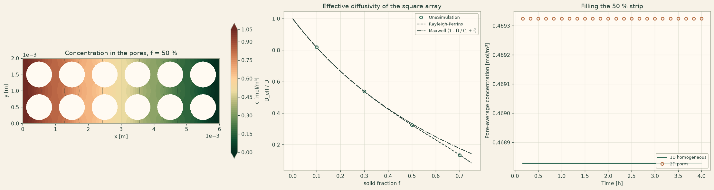
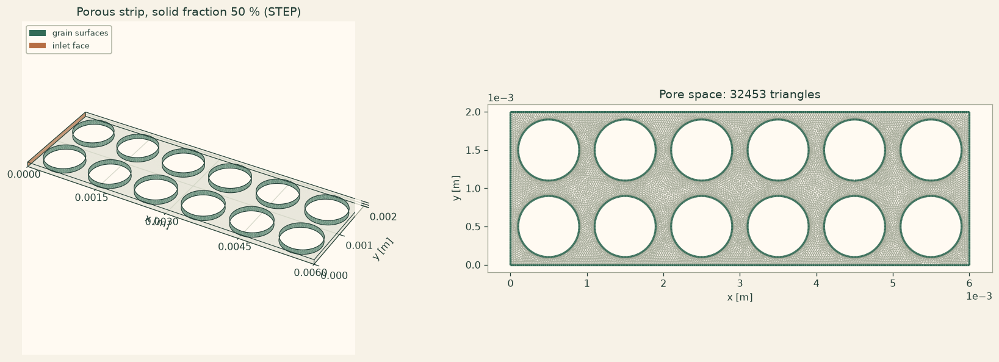

Docs › Examples › Diffusion through a porous strip
Mass transport · 2D
Diffusion through a porous strip
How much does an array of solid grains slow diffusion? Four strips with different solid fractions give the effective diffusivity from the solute flux.
Run locally with OneSimulation. The example downloads are free. Running them requires an activated runtime. Runtime Alpha 0.2.1a8 · CPython 3.13 on macOS (Apple Silicon), Ubuntu 22.04 (x86-64), and Windows x64. Installation and activation · View pilot plans. Scope of the reference checks.


What it computes
Quadratic finite elements resolve diffusion between the grains. A homogeneous line then uses the measured diffusivity and the available pore volume to predict the filling of the 50 % strip. The script that builds the STEP files comes with the notebook.
What it checks
At 50 % solid the stationary mesh increases from 34,017 to 68,496 concentration nodes and the outlet flux changes by 0.025 %. Across four solid fractions the effective diffusivity differs from the Rayleigh–Perrins formula by up to 0.64 %. The transient pore and homogeneous filling curves differ by up to 0.00050 mol/m³.
Geometry
Save the STEP files porous_effective_diffusivity.step, porous_effective_diffusivity_10.step, porous_effective_diffusivity_30.step, porous_effective_diffusivity_70.step next to the notebook before running it.


The geometry script
The script porous_effective_diffusivity_geometry.py builds the geometry with the CAD objects of OneSimulation and writes the files. Change a dimension there, run it, and run the notebook again.
"""Geometry of the OneSimulation example "Effective diffusivity of a porous medium".
Builds, as thin plates with the CAD objects of OneSimulation, a strip of a porous medium: a
square array of 6 x 2 impermeable cylindrical grains in cells of 1 mm, for four solid fractions
(porous_effective_diffusivity.step for 50 %, porous_effective_diffusivity_<percent>.step otherwise). The faces x_min, x_max, y_min and y_max of the strip
keep their names, the grain surfaces are grouped as "grains". The example computes on the
cross-section z = 0.05 mm.
"""
import numpy as np
from onesim.cad.d3 import Box, Cylinder
cell, thickness = 1e-3, 1e-4
for fraction in (0.1, 0.3, 0.5, 0.7):
radius = cell * np.sqrt(fraction / np.pi)
strip = Box(length=6 * cell, width=2 * cell, height=thickness)
for i in range(6):
for j in range(2):
strip = strip - Cylinder(
radius=radius, length=thickness, origin=((i + 0.5) * cell, (j + 0.5) * cell, 0.0)
)
strip = strip.grouped(grains=strip.select(faces=lambda face: face.kind == "cylinder"))
filename = (
"porous_effective_diffusivity.step"
if fraction == 0.5
else f"porous_effective_diffusivity_{round(100 * fraction)}.step"
)
strip.save(filename)The notebook
The complete notebook, cell by cell. Run it to produce the figures and the comparison printout.
Transport through porous materials is usually described by a homogeneous model with an effective diffusivity \(D_\mathrm{eff}\), because the pores are far smaller than the device. The effective value follows from the microstructure: a representative piece of it is resolved, a concentration difference is applied across it, and the steady flux is measured,
with the molar flux \(J\) per unit depth through a strip of length \(L\) and height \(H\), so that \(D_\mathrm{eff}\) refers to the total cross-section. Here the grains are impermeable cylinders on a square lattice with the solid fraction \(f\); OneSimulation solves the pore diffusion with the SpeciesTransport model and quadratic triangles on the cross-section of each STEP file.
| Boundary | Condition |
|---|---|
\(x=0\) (x_min) | \(c=c_\mathrm{in}=1\) mol/m³ |
\(x=L\) (x_max) | \(c=c_\mathrm{out}=0\) |
| top, bottom, grain surfaces | no flux |
By symmetry of the square array the planes between grain rows and columns are planes of symmetry, so a strip of 6 x 2 cells gives the value of the infinite array.
Reference. Lord Rayleigh, On the influence of obstacles arranged in rectangular order upon the properties of a medium, Phil. Mag. 34, 481-502 (1892); W. T. Perrins, D. R. McKenzie and R. C. McPhedran, Proc. R. Soc. Lond. A 369, 207-225 (1979). For impermeable cylinders on a square lattice
which reduces to Maxwell's dilute limit \((1-f)/(1+f)\) for small \(f\). The tortuosity factor \(\tau=\varepsilon D/D_\mathrm{eff}\) with the porosity \(\varepsilon=1-f\) follows directly.
import numpy as np
from onesim.cad.d1 import Line
from onesim.cad.exchange import load
from onesim.meshing import StructuredLineMesher, TriangularMesher
from onesim.numerics import Numerics
from onesim.numerics.fem import FiniteElement, Lagrange
from onesim.numerics.linear import SparseDirect
from onesim.numerics.nonlinear import Newton
from onesim.numerics.time import BDF, BackwardEuler
from onesim.physics.chemistry import (
FixedConcentration,
SpeciesTransport,
TransportSpecies,
)
from onesim.simulation import Problem, Simulation
from onesim.simulation.initial_conditions import InitialValue
from onesim.visualization import plots, theme
theme.set()Geometry and mesh
Four strips with solid fractions of 10 % to 70 %, cut at mid-thickness; quadratic triangles with 26 µm bulk and 10 µm grain-edge targets. The 50 % strip also retains the 40/15 µm mesh for a direct comparison of the stationary flux.
fractions = (0.1, 0.3, 0.5, 0.7)
files = {f: f"porous_effective_diffusivity_{round(100 * f)}.step" for f in fractions}
files[0.5] = "porous_effective_diffusivity.step"
parts = {f: load(name) for f, name in files.items()}
planes = {f: part.section((0, 0, 1), origin=(0, 0, 5e-5)) for f, part in parts.items()}
meshes = {
f: TriangularMesher(target_size=2.6e-5, local_sizes={"grains": 1e-5}).generate(plane)
for f, plane in planes.items()
}
coarse = TriangularMesher(target_size=4e-5, local_sizes={"grains": 1.5e-5}).generate(planes[0.5])
length, height = planes[0.5].size[:2]
fig = plots.figure(1, 2, size=(15, 5))
plots.geometry(
parts[0.5],
selection={
"grain surfaces": parts[0.5].boundaries.grains,
"inlet face": parts[0.5].boundaries.x_min,
},
labels=False,
camera=plots.Camera(elevation=35, azimuth=-60),
title="Porous strip, solid fraction 50 % (STEP)",
ax=fig[0],
)
plots.mesh(
meshes[0.5],
groups=("all",),
legend=False,
title=f"Pore space: {meshes[0.5].cell_count} triangles",
ax=fig[1],
)
plots.show()Model and solution
One stationary diffusion problem per solid fraction, with the molecular diffusivity of a small solute in water.
diffusivity = 1e-9
spatial = FiniteElement(element=Lagrange(order=2))
fields = {}
for fraction, plane in planes.items():
model = SpeciesTransport(
domain=plane.domain(), species=(TransportSpecies("A", diffusivity=diffusivity),)
)
ends = (
FixedConcentration(physics=model, boundary=plane.boundaries.x_min, value=1.0),
FixedConcentration(physics=model, boundary=plane.boundaries.x_max, value=0.0),
)
problem = Problem(name="Pore strip", geometry=plane, physics=(model,), boundary_conditions=ends)
simulation = Simulation(
problem=problem,
mesh=meshes[fraction],
numerics=Numerics(spatial=spatial, linear_solver=SparseDirect()),
)
fields[fraction] = simulation.solve_stationary().field(model.field("A"))
print(f"Solid fraction {fraction:g}: {meshes[fraction].cell_count} triangles, {len(fields[fraction].space.dof_coordinates)} concentration nodes")
if fraction == 0.5:
reference = Simulation(problem=problem, mesh=coarse, numerics=Numerics(spatial=spatial, linear_solver=SparseDirect()))
coarse_field = reference.solve_stationary().field(model.field("A"))
coarse_flux = coarse_field.boundary_flux(plane.boundaries.x_max)
fine_flux = fields[fraction].boundary_flux(plane.boundaries.x_max)
print(f"50 % strip: {coarse.cell_count} to {meshes[fraction].cell_count} triangles, {len(coarse_field.space.dof_coordinates)} to {len(fields[fraction].space.dof_coordinates)} nodes, outlet flux change {100 * (fine_flux / coarse_flux - 1):+.4f} %")Comparison with the Rayleigh-Perrins formula
The outflow and the inflow must agree (conservation); their mean gives \(D_\mathrm{eff}\).
rayleigh = lambda f: 1 - 2 * f / (1 + f - 0.305827 * f**4 / (1 - 1.402958 * f**8) - 0.013362 * f**8)
print(
" f porosity D_eff/D computed Rayleigh-Perrins deviation Maxwell tortuosity in/out flux balance"
)
ratios = {}
for f, field in fields.items():
inflow, outflow = field.boundary_flux(planes[f].boundaries.x_min), field.boundary_flux(
planes[f].boundaries.x_max
)
ratios[f] = 0.5 * (outflow - inflow) * length / (height * diffusivity)
print(
f"{f:4.1f} {1 - f:9.2f} {ratios[f]:16.5f} {rayleigh(f):17.5f} {100 * (ratios[f] / rayleigh(f) - 1):+10.3f} % "
f"{(1 - f) / (1 + f):9.4f} {(1 - f) / ratios[f]:11.3f} {abs(inflow + outflow) / outflow:16.1e}"
)Does a homogeneous strip fill at the same rate?
Initially the pores contain no solute. Fix the left and right end concentrations at one and zero. Compare the resolved 50 % strip with a homogeneous line. Its storage is the pore fraction \(\varepsilon\), so the diffusion coefficient in its concentration equation is \(D_\mathrm{eff}/\varepsilon\). Normalize both inventories by the available pore volume.
porosity = 0.5
line = Line(start=(0, 0, 0), end=(length, 0, 0))
plane = planes[0.5]
domains = [
(
"2D pores",
plane,
plane.domain(),
plane.boundaries.x_min,
plane.boundaries.x_max,
TriangularMesher(target_size=5.5e-5).generate(plane),
diffusivity,
length * height * porosity,
),
(
"1D homogeneous",
line,
line.line,
line.boundaries.start,
line.boundaries.end,
StructuredLineMesher(cells=128).generate(line),
diffusivity * ratios[0.5] / porosity,
length,
),
]
inventory = {}
for name, geometry, domain, left, right, mesh, coefficient, measure in domains:
model = SpeciesTransport(
domain=domain, species=(TransportSpecies("A", diffusivity=coefficient),)
)
ends = (
FixedConcentration(physics=model, boundary=left, value=1.0),
FixedConcentration(physics=model, boundary=right, value=0.0),
)
problem = Problem(
name=name,
geometry=geometry,
physics=(model,),
boundary_conditions=ends,
initial_conditions=(InitialValue(model.field("A"), 0.0),),
)
numerics = Numerics(
spatial=spatial,
nonlinear_solver=Newton(linear_solver=SparseDirect(), absolute_tolerance=1e-15),
time_integrator=BDF(order=2, startup=BackwardEuler()),
)
history = (
Simulation(problem=problem, mesh=mesh, numerics=numerics)
.run(start_time=0.0, end_time=14400.0, time_step=600.0)
.field(model.field("A"))
)
print(f"Transient {name}: {mesh.cell_count} elements, {len(history.space.dof_coordinates)} concentration nodes")
times = history.times[1:]
inventory[name] = np.array([history.at(t).integrate().value / measure for t in times])
print(
f"After 4 h: pore-average concentration {inventory['2D pores'][-1]:.5f} mol/m³; "
f"homogeneous model {inventory['1D homogeneous'][-1]:.5f} mol/m³."
)
print(
f"Largest inventory difference across the recorded steps: "
f"{max(abs(inventory['2D pores'] - inventory['1D homogeneous'])):.5f} mol/m³."
)Figure
The concentration in the pores of the 50 % strip, and the effective diffusivity over the solid fraction against the Rayleigh-Perrins formula and Maxwell's dilute limit. The third panel compares the resolved and homogenized inventories over four hours.
fine = np.linspace(0.0, 0.75, 151)
fig = plots.figure(1, 3, size=(19, 5))
plots.surface(
fields[0.5],
limits=(0.0, 1.0),
contours=11,
subdivisions=2,
xlabel="x [m]",
ylabel="y [m]",
label="c [mol/m³]",
title="Concentration in the pores, f = 50 %",
ax=fig[0],
)
plots.line(
points={"OneSimulation": (np.array(fractions), np.array([ratios[f] for f in fractions]))},
reference={
"Rayleigh-Perrins": (fine, rayleigh(fine)),
"Maxwell (1 - f) / (1 + f)": (fine, (1 - fine) / (1 + fine)),
},
xlabel="solid fraction f",
ylabel="D_eff / D",
title="Effective diffusivity of the square array",
legend="upper right",
ax=fig[1],
)
plots.line(
times / 3600,
{"1D homogeneous": inventory["1D homogeneous"]},
points={"2D pores": (times / 3600, inventory["2D pores"])},
xlabel="Time [h]",
ylabel="Pore-average concentration [mol/m³]",
title="Filling the 50 % strip",
legend="lower right",
ax=fig[2],
)
plots.show()Going further
Replace the square array by a random packing of grains of different sizes, or let the grains overlap into a connected skeleton: the formula no longer applies, but the same strip gives \(D_\mathrm{eff}\). Shift the array by half a cell between rows (a staggered array) and compare with the hexagonal-array result of Perrins et al.; at high solid fractions the two lattices differ strongly because the narrowest pore throat differs.